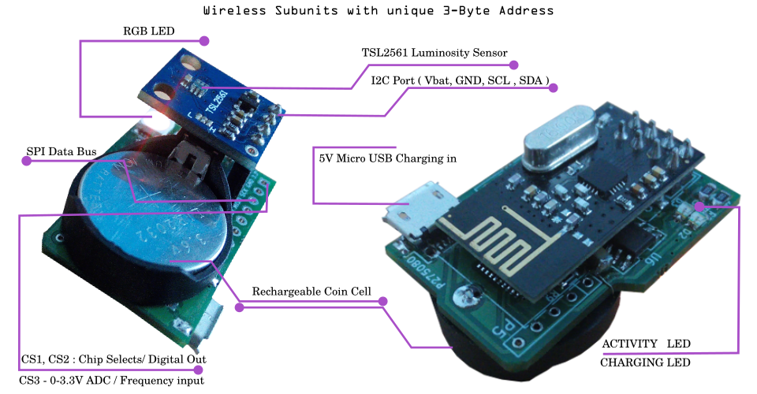

Logger for Wireless Nodes

Wireless nodes are rechargeable battery powered units capable of various tasks such as
-I2C sensor data link
-10 bit 0-3.3ADC
-8MHz frequency counter
-RGB LED
-Digital I/O
-5-bit DAC

After launching this utility, power on your wireless nodes, and they will be automatically detected and listed
Uncheck the 'auto-listen' box once your sensor has been detected
Select the function you need, such as sensor logging, ADC, or frequency counter. Click on the coloured square at the top-right to set the colour of the RGB LED